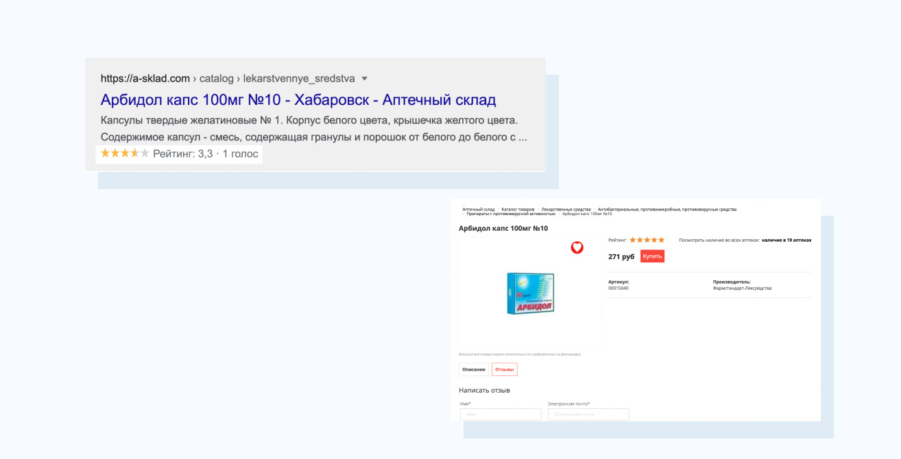

Популярные ошибки при реализации
Разберем популярные ошибки, которые многие допускают при реализации микроразметки на сайте.
1. Откровенный спам
Некоторые выводят в микроразметке то, чего на странице абсолютно точно нет. На такой сайт легко можно пожаловаться и он лишиться данного типа расширенных сниппетов (для всего сайта).
Если перейти на сайт банка в примере, то на странице нет ни самого рейтинга, ни возможности оставить оценку. Не надо так.
2. Не соответствующая контенту микроразметка
Иногда встречается проблема, когда на сайте указана информация не соответствующая тому, что указано в микроразметке.
Во-первых в данном примере рейтинг на странице не выводится. Во-вторых непонятно как так вышло, что на сайте можно оставить только целую оценку, а в сниппете она дробная и сформирована на основе одной оценки..
3. Копипаст с конкурентов
Не стоит делать бездумный копипаст с успешных конкурентов. Всегда анализируйте подходит ли микроразметка под ваш контент и пойдет ли она вам в плюс, ведь вполне возможно что конкуренты имеют хорошие позиции не благодаря микроразметке, а вопреки.
В данном примере Apple IPhone предлагается купить по какой-то неоправданно низкой цене. Любой здравомыслящий человек поймет что новый IPhone за такие деньги не купишь, это либо старая модель, либо битая модель, либо ворованная. А рейтинг 5 из 5 на основе одной оценки пользователя вообще ни о чем не говорит (разве что о том, что страницу редко посещают).
4. Несовместимые сущности
Не размещайте все подряд сущности на странице, ведь некоторые из них могут не сочетаться. При этом поисковая система выберет только один тип микроразметки для отображения в поиске (а приоритет им нельзя задать).
В примере Organization никак не сочетается с Product, а также c CreditCard. И какую из этих сущностей выберет поисковая система остается только гадать.. Хотя чаще всего это бывает Product.
5. Упущен этап сканирования
Одна из самых популярных ошибок случается когда мы забываем про этап сканирования всех страниц, где разместили микроразметку. В итоге страницы могут целый год не получать расширенных сниппетов просто потому что поисковая система не обнаружила изменения.
В примере на странице используется несколько типов микроразметки, позволяющих получить классный расширенный сниппет. Но, кто-то забыл отправить страницу на переобход в Google Search Console или любым другим способом.